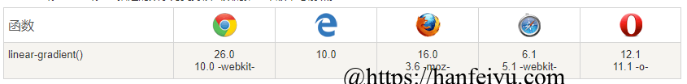

之前基于Hexo的matery模板搭建了一个个人博客(搭建教程详见另一篇博客：(https://hanfeiyu.com/2019/08/27/start-my-blog/)，在后期完善过程中，遇到了许多这样那样的问题，所以专门写了一篇博客记录下来，此篇博客将在后期不定时更新（每遇到问题时😀）。
一、个性化定制
1、使用Gittalk插件时，点击GitHub登录，网站跳转失败问题
在博客文章下面添加评论模块，hexo-theme-matery模板中已经提供了gitalk接口，很方便我们直接调用。我们要在GitHub中创建一个应用：https://github.com/settings/applications/new
创建之后，会出现clienIdhe clientSecret信息：

打开D:\MyBlog\themes\hexo-theme-matery\ _config.yml，
gitalk:
enable: true
owner: FyHaHa ##GitHub 的用户名
repo: fyhaha.github.io # 前文建立的repository名称
oauth:
clientId:
clientSecret:
admin: FyHaHa ##GitHub 的用户名然后 hexo clean && hexo g && hexo d
但是，你会发现当你点击GitHub登陆时，总会跳转到博客主页，这是为什么呢？韩先森一开始也百思不得其解，最后查阅资料知道，我们在创建repository 时，勾选了Enforce HTTPS（下图）选项，所以导致每当我们点击GitHub登陆时，总是寻址都寻不到正确的网址，不得已才会回调到我们博客。

所以我们应该在GitHub创建应用时，应该将网址前缀修改为https，

这样，就可以正常登录GitHub进行评论了。
2、修改主题配色
如果你想要修改主题配色，需要对源代码进行修改，打开主题文件夹目录下的source\css\matery.css，找到
@-webkit-keyframes rainbow {
0%,
100% {
background: rgba();
background: linear-gradient();
background: -moz-linear-gradient();
background: -webkit-linear-gradient();
}
16% {
background: rgba();
background: linear-gradient();
background: -moz-linear-gradient();
background: -webkit-linear-gradient();
}
......
}
@keyframes rainbow {
}对CSS语言不熟悉的同学看到这里可能就有一丝丝蒙蔽了，没关系，不熟也没关系。为什么rainbow前缀为何要加上@-webkit-keyframes , @keyframes ,因为不同浏览器的内核不同，这样做的目的就是要支持不同内核的浏览器，所以@-webkit-keyframes rainbow 和 @keyframes rainbow 两个代码段的代码相同。linear-gradient()函数是实现渐变色的效果，
linear-gradient(45deg, rgba(255, 160, 0, 0.75) 0%, rgba(255, 160, 0, 0.65) 100%); 上条指令的效果，便是从45度角的为止，开始渐变颜色，从rgb为(255,260,0)，透明度为0.75的颜色，渐变为rgb为(255,260,0)，透明度为0.65的颜色。
background: -moz-linear-gradient(); /*for FireFox*/
background: -webkit-linear-gradient(); /*for Safari and Chrome*/表示支持不同内核的浏览器的渐变函数。

然后根据你的个人喜好，合理的搭配颜色即可。
主题颜色配好之后，如果还想配置其他控件的颜色或者其他属性，可以在
.bg-color {
/*修改导航栏颜色*/
}
.progress-bar {
/*修改页面底部进度条的属性：大小、颜色等*/
}
header .brand-logo .logo-img {
/*修改Logo大小、位置*/
}更多控件属性均可以在matery.css中进行修改，等待着你的发现！
二、博客发布
1、图片上传失败
这点是自己在做测试时发现的，在写博客的时候，有时候如果图片尺寸过大，容易造成上传不成功，这时候就需要对图像进行压缩后上传。
2、不支持某些特定字符
在写博文时，不知道你有木有遇到以下问题：
错误提示是在_post\some-problems-in-blog-solved.md中，出现错误，定位在line 2 colume 4，
ERROR Process failed: _posts/some-problems-in-blog-solved.md
YAMLException: can not read a block mapping entry; a multiline key may not be an implicit key at line 2, column 4:
top: false
但是，我回到.md文件中查看，发现并没有什么语法错误。
百思不得其解，结果后来发现，是因为我在标题使用了[ ] 字符，将[ ]删除后，即可正常运行。
3、变量定义冲突
错误信息：
ERROR Process failed: _posts/some-problems-in-blog-solved.md
YAMLException: duplicated mapping key at line 8, column 1:
cover: false
^
表示有变量定义冲突，查看_posts\some-problems-in-blog-solved.md文件，发现cover变量重复定义。
4、文章加密
通过安装hexo-blog-encrypt插件来实现文章的加密，需要注意以下问题：